LRRM#
This example demonstrates how to use skrf’s LRRM calibration. LRRM stands for Line-Reflect-Reflect-Match which are the calibration standards needed for the calibration. There are few different implementations of the LRRM that use slightly different assumptions and match model. skrf’s LRRM calibration uses the following assumptions:
Line standard needs to be known exactly.
First reflect’s phase needs to be known within 90 degrees. It can be lossy and it’s assumed to be identical on both ports.
Second reflect’s |S11| is assumed to be known, it’s phase also needs to be known within 90 degrees and it’s assumed to be identical on both ports. The two reflects need to be different and their phase difference should be 180 degrees for the best accuracy.
Match is assumed to be a known resistance in series with unknown inductance. Match only needs to be measured on the first port.
The calibration standards and measurements need to be given in the above order to the calibration routine. If the above assumptions are followed the calibration can solve the reflects, match and calibration parameters exactly.
LRRM example with synthetic data#
Setup#
[1]:
%matplotlib inline
import matplotlib.pyplot as plt
import skrf
from skrf.calibration import LRRM, TwelveTerm, terminate
from skrf.media import Coaxial
from skrf.network import two_port_reflect
skrf.stylely()
Generate example data#
We first generate some synthetic error boxes and calibration standards. We will have two sets of the calibration standards. The real standards used for calibration that have parasitics and the approximate standards without parasitics that we will give to the calibration algorithm.
[2]:
freq = skrf.Frequency(1, 100, 100, 'GHz')
# 1.0 mm coaxial media for calibration error boxes
coax = Coaxial(freq, z0_port=50, Dint=0.44e-3, Dout=1.0e-3, sigma=1e8)
# Generate random error boxes
X = coax.random(n_ports=2, name='X')
Y = coax.random(n_ports=2, name='Y')
# Random switch terms
gamma_f = coax.random(n_ports=1, name='gamma_f')
gamma_r = coax.random(n_ports=1, name='gamma_r')
# Our guess of the standards. We assume they don't have any parasitics.
oo_i = coax.open(nports=2, name='open')
ss_i = coax.short(nports=2, name='short')
# Match is only measured on one port. Resistance can be different from 50 ohms.
m_i = coax.resistor(R=50, name='r') ** coax.short(nports=1)
# Thru must be known exactly
thru = coax.line(d=100, unit='um', name='thru')
# Actual reflects with parasitics. They must be identical in both ports.
# Short is slightly lossy.
ss = coax.line(d=200, unit='um') ** coax.load(-0.98,nports=2, name='short') ** coax.line(d=200, unit='um')
oo = coax.shunt_capacitor(10e-15) ** coax.open(nports=2, name='open') ** coax.shunt_capacitor(10e-15)
# Match standard has inductance in series.
match_l = 40e-12
l = coax.inductor(L=match_l)
m = l**m_i
# Make two-port of the match with open on the second port.
mm = two_port_reflect(m, coax.open(nports=1))
# Make two-port for the match standard
mm_i = coax.match(nports=2, name='load')
# These are our guesses of the calibration standards.
approx_ideals = [
thru,
ss_i,
oo_i,
mm_i
]
# These are the actual standards with parasitics.
ideals = [
thru,
ss,
oo,
mm
]
# Make measurement of the standards using the random error boxes and switch terms.
measured = [terminate(X**k**Y, gamma_f, gamma_r) for k in ideals]
Visualize the standards#
[3]:
plt.figure()
oo.plot_s_smith(m=0, n=0, label='Open')
ss.plot_s_smith(m=0, n=0, label='Short')
mm.plot_s_smith(m=0, n=0, label='Match')
plt.figure()
oo.plot_s_db(m=0, n=0, label='Open')
ss.plot_s_db(m=0, n=0, label='Short')
mm.plot_s_db(m=0, n=0, label='Match')
/home/alex/code/scikit-rf-docs/skrf/mathFunctions.py:303: RuntimeWarning: divide by zero encountered in log10
out = 20 * np.log10(z)

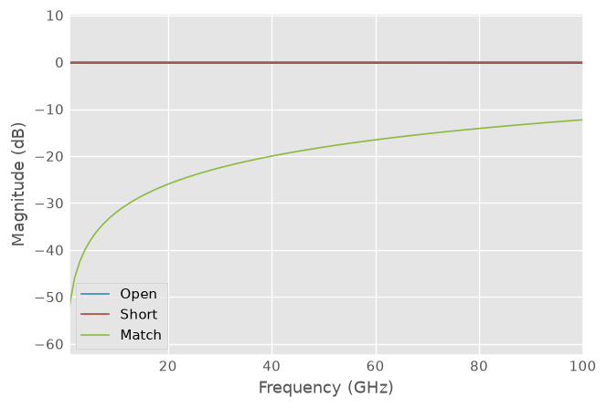
LRRM calibration#
We pretend to not know the actual standards with parasitics and give only our approximations of the standards without parasitics and the measurements of the standard with parasitics.
Visualizing the solved standards#
LRRM calibration solves for the real standards. We can get the solved standards from the cal object. The solved standards should match the actual standards above.
[5]:
plt.figure()
cal.solved_r2.plot_s_smith(m=0, n=0, label='Open')
cal.solved_r1.plot_s_smith(m=0, n=0, label='Short')
cal.solved_m.plot_s_smith(m=0, n=0, label='Match')
plt.figure()
cal.solved_r2.plot_s_db(m=0, n=0, label='Open')
cal.solved_r1.plot_s_db(m=0, n=0, label='Short')
cal.solved_m.plot_s_db(m=0, n=0, label='Match')
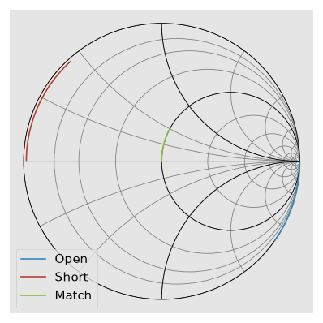

The solved inductance of the match is also given as calibration output. It’s given as an array but with the default options a single inductance is fitted over all frequencies.
[6]:
solved_match_l = cal.solved_l[0]
print(f'Solved inductance {1e12*solved_match_l:.1f} pH, actual inductance {1e12*match_l:.1f} pH')
Solved inductance 40.0 pH, actual inductance 40.0 pH
Calibrating DUT#
Measured DUT can be calibrated using the apply_cal method. The S-parameters should match exactly.
[7]:
# Let's generate a DUT: 5 mm long 75 ohm line.
dut = coax.line(d=5, unit='mm', z0=75)
dut_measured = terminate(X**dut**Y, gamma_f, gamma_r)
dut_cal = cal.apply_cal(dut_measured)
plt.figure()
dut.plot_s_db(m=0, n=0, label='Actual S11')
dut.plot_s_db(m=1, n=0, label='Actual S21')
dut_cal.plot_s_db(m=0, n=0, label='Calibrated S11')
dut_cal.plot_s_db(m=1, n=0, label='Calibrated S21')
plt.ylim([-20, 5])
[7]:
(-20.0, 5.0)
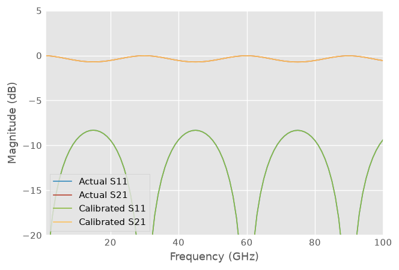
Calibration verification using reflect |S11|#
During the calibration the second reflect |S11| is assumed to be known (|S11| = 1 in this case), but when a single inductance is fitted to the match standard this assumption can be broken. If the real match is not modeled well as known resistance in series with inductance it causes the reflect standard losslessness to be violated. By plotting the absolute value of the reflect we can get an idea on how good the calibration assumptions are.
Let’s first plot the open |S11| in the previous calibration. It should be exactly 0 dB if everything worked correctly.
[8]:
plt.figure()
cal.solved_r2.plot_s_db(m=0, n=0, label='Solved open')
plt.ylim([-0.01, 0.01])
[8]:
(-0.01, 0.01)
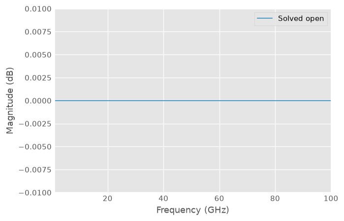
Calibration with capacitive match#
The LRRM calibration model of the match is a resistance in series with an inductor. If the match also has parallel capacitance it won’t be solved correctly and there will be errors in the corrected measurements.
Let’s define a new match standard and redo the calibration using it.
[9]:
# Match standard with series inductance and parallel capacitance.
match_c = 20e-15
match_l = 20e-12
l = coax.inductor(L=match_l)
c = coax.shunt_capacitor(match_c)
m = c**l**m_i
# Make two-port of the match with open on the second port.
mm = two_port_reflect(m, coax.open(nports=1))
# Redo the match measurement
ideals[3] = mm
measured[3] = terminate(X**mm**Y, gamma_f, gamma_r)
# Redo the calibration
cal = LRRM(
ideals = approx_ideals,
measured = measured,
switch_terms = [gamma_f, gamma_r]
)
Visualize the capacitive match and the solved match#
Calibration tries to fit the inductance to the match as best as it can but it can’t model the match exactly with an inductor. The closest fit is a negative valued inductor.
[10]:
plt.figure()
mm.plot_s_smith(m=0, n=0, label='Actual')
cal.solved_m.plot_s_smith(m=0, n=0, label='Solved')
plt.figure()
mm.plot_s_db(m=0, n=0, label='Actual')
cal.solved_m.plot_s_db(m=0, n=0, label='Solved')
/home/alex/code/scikit-rf-docs/skrf/mathFunctions.py:303: RuntimeWarning: divide by zero encountered in log10
out = 20 * np.log10(z)
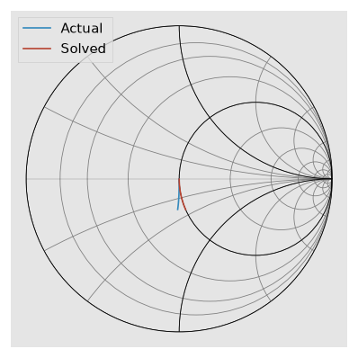
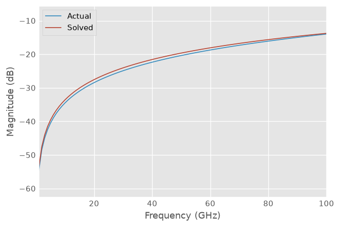
[11]:
solved_match_l = cal.solved_l[0]
print(f'Solved inductance {1e12*solved_match_l:.1f} pH')
Solved inductance -33.4 pH
Plotting the |S11| of the open reveals that the solved open is not lossless indicating that some of the calibration assumptions were violated.
[12]:
plt.figure()
cal.solved_r2.plot_s_db(m=0, n=0, label='Solved open')
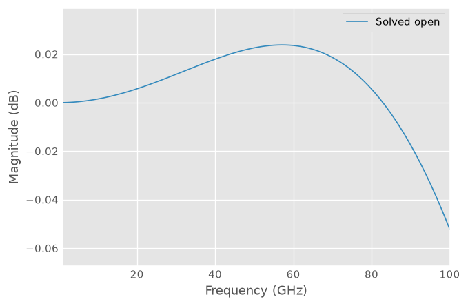
DUT measurement with incorrectly modeled match#
The incorrect match causes errors in the calibration parameters. The error increases at higher frequencies where the match modeling error is bigger.
[13]:
dut_cal2 = cal.apply_cal(dut_measured)
plt.figure()
dut.plot_s_db(m=0, n=0, label='Actual S11')
dut.plot_s_db(m=1, n=0, label='Actual S21')
dut_cal2.plot_s_db(m=0, n=0, label='Calibrated S11')
dut_cal2.plot_s_db(m=1, n=0, label='Calibrated S21')
plt.ylim([-20, 5])
[13]:
(-20.0, 5.0)
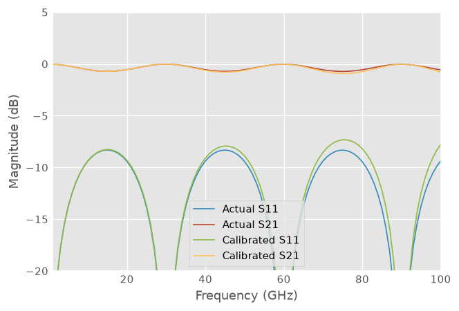
Match fit with inductance and capacitance#
LRRM has an option to use a match model with parallel capacitance which allows fitting the above match. The additional requirement for this fitting method is that the second reflect is open with some unknown capacitance. The open capacitance is fitted first assuming match is perfectly resistive weighting low frequencies where the assumption is likely to hold better. When the open capacitance is known match capacitance and inductance are fitted. The open and match fitting is iterated few times to
refine the open and match guesses. This fitting method can be used by passing match_fit = 'lc' to the calibration method.
[14]:
[15]:
plt.figure()
mm.plot_s_smith(m=0, n=0, label='Actual')
cal.solved_m.plot_s_smith(m=0, n=0, label='Solved')
plt.figure()
mm.plot_s_db(m=0, n=0, label='Actual')
cal.solved_m.plot_s_db(m=0, n=0, label='Solved')
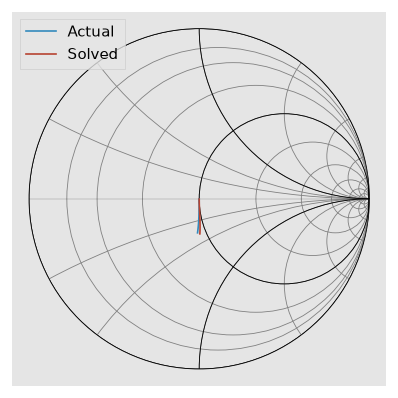
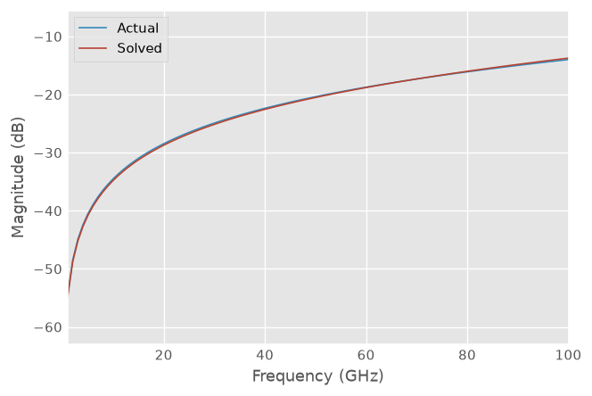
[16]:
solved_match_l = cal.solved_l[0]
solved_match_c = cal.solved_c[0]
print(f'Solved inductance {1e12*solved_match_l:.1f} pH, actual inductance {1e12*match_l:.1f} pH')
print(f'Solved capacitance {1e15*solved_match_c:.1f} fF, actual capacitance {1e15*match_c:.1f} fF')
Solved inductance 24.8 pH, actual inductance 20.0 pH
Solved capacitance 21.5 fF, actual capacitance 20.0 fF
Applying the calibration now to the measurements should give a close fit.
[17]:
dut_cal3 = cal.apply_cal(dut_measured)
plt.figure()
dut.plot_s_db(m=0, n=0, label='Actual S11')
dut.plot_s_db(m=1, n=0, label='Actual S21')
dut_cal3.plot_s_db(m=0, n=0, label='Calibrated S11')
dut_cal3.plot_s_db(m=1, n=0, label='Calibrated S21')
plt.ylim([-20, 5])
[17]:
(-20.0, 5.0)
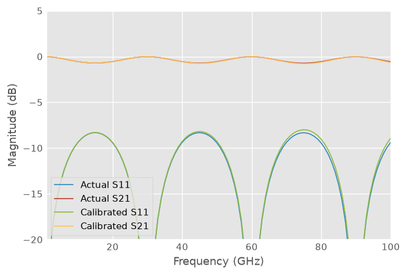
Comparison with SOLT calibration#
The traditional two-port SOLT calibration assumes that all standards are known accurately. We can compare how it would perform with the same measurements with the same approximately known standards. Match needs to be also measured on the second port for SOLT, we assume it’s identical to the first port. The randomly generated error boxes make the calibration especially difficult.
[18]:
# SOLT requires match measurement on both ports.
mm = two_port_reflect(m, m)
measured[3] = terminate(X**mm**Y, gamma_f, gamma_r)
# TwelveTerm assumes that thru is last.
cal12 = TwelveTerm(
ideals = list(reversed(approx_ideals)),
measured = list(reversed(measured)),
n_thrus = 1,
)
dut_cal12 = cal12.apply_cal(dut_measured)
plt.figure()
dut.plot_s_db(m=0, n=0, label='Actual S11')
dut.plot_s_db(m=1, n=0, label='Actual S21')
dut_cal12.plot_s_db(m=0, n=0, label='Calibrated S11')
dut_cal12.plot_s_db(m=1, n=0, label='Calibrated S21')
plt.ylim([-20, 5])
[18]:
(-20.0, 5.0)

[ ]: